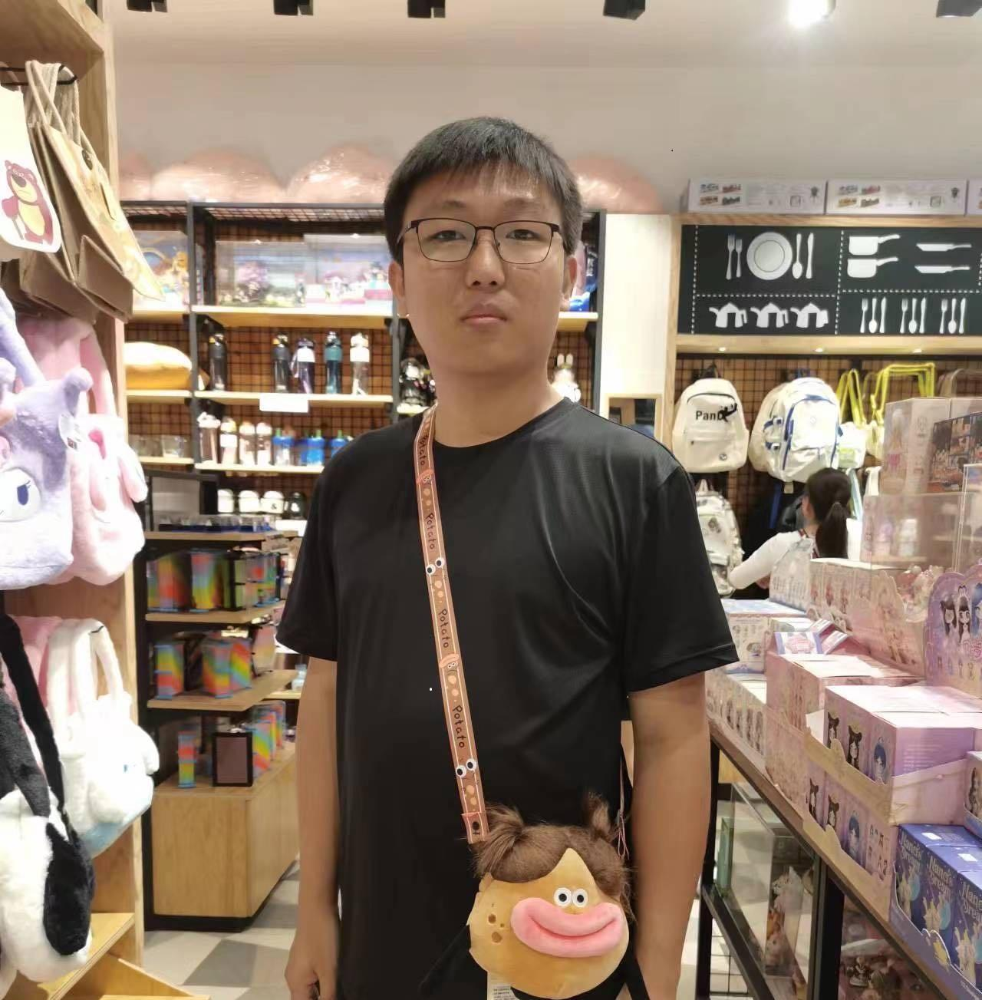
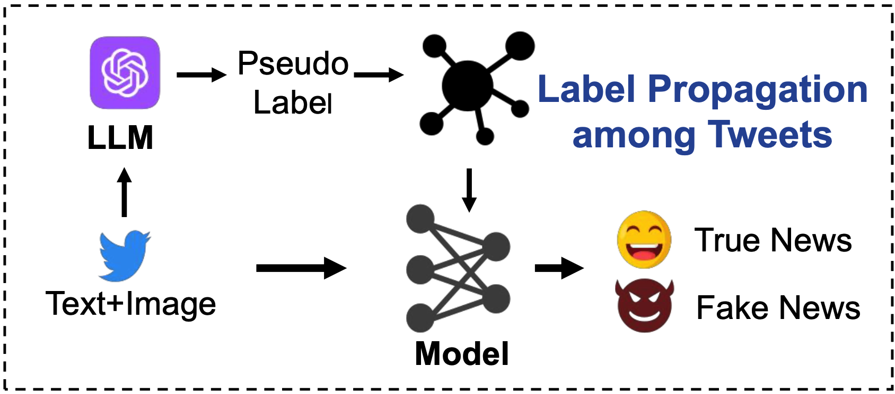
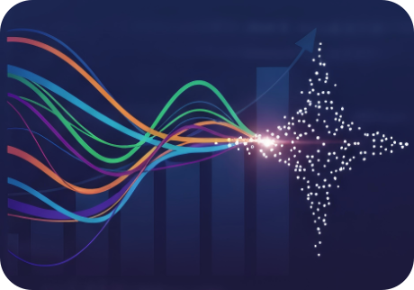
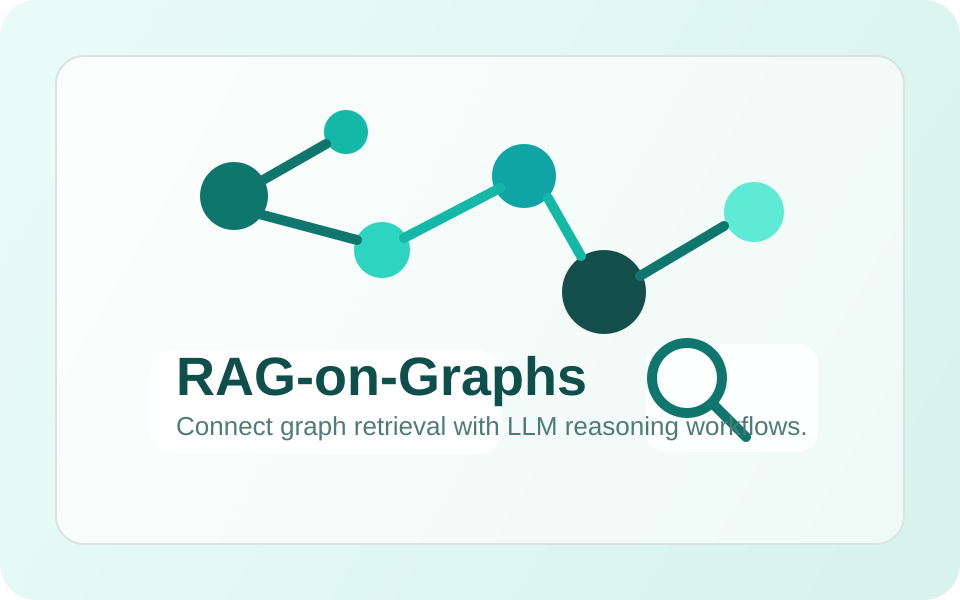

|
Shuguo Hu (胡树国) I worked as a Research Assistant under the supervision of Prof. Jing Ma from 2025. Currently, I am a third-year Master student at Inner Mongolia University in 2026, supervised by Prof. Huaiwen Zhang.
Before that, I received my Bechelor's degree from
JiLin University in 2021.
Inner Mongolia University in 2026, supervised by Prof. Huaiwen Zhang.
Before that, I received my Bechelor's degree from
JiLin University in 2021.
My current research interests primarily revolve around Social Media Analytics and LLMs. I am particularly interested in developing robust and reliable security solutions within this area. My previous research interest was time series. |
 |
{kind=link}
News
• 04/2026 I was awarded the Outstanding Graduate. |
Selected Publications |
|
 |
Synergizing LLMs with Global Label Propagation for Multimodal Fake News Detection
Shuguo Hu, Jun Hu, Huaiwen Zhang ACL 2025 Long Paper arXiv / code GLPN-LLM combines LLM-generated pseudo labels with a global label propagation mechanism for multimodal fake news detection. By propagating reliable label information across text-image news samples, it strengthens detection performance on benchmark social media datasets. |
Open Source Projects |
|
 |
Awesome-Time-Series-Papers
TSCenter. Open-source repository GitHub / stars Awesome-Time-Series-Papers is a curated repository of recent time series papers and code from top AI venues. It helps readers quickly follow new work across forecasting, anomaly detection, classification, and time-series foundation models. |
|
 |
RAG-on-Graphs (RGL)
PyRGL. Open-source Python toolkit GitHub / stars RAG-on-Graphs is a Python toolkit for retrieval-augmented generation on graph-structured data. It is designed to connect large language models with graph reasoning, graph retrieval, and practical downstream knowledge applications. |
Professional Services
• Co-chair, ICLR 2026 @ AITIME, April 2026. |
|
|
|
Thanks Jon Barron and Yixuan Li for sharing the source code of this website template. |